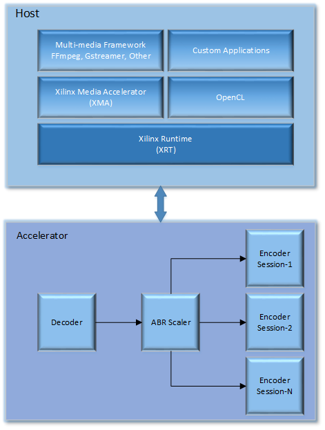
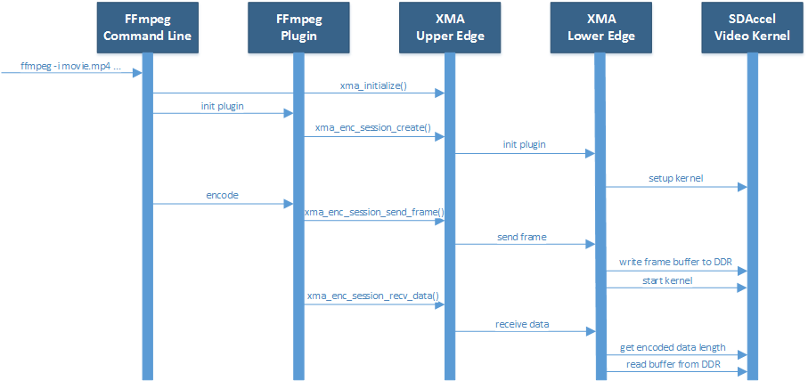

XMA Overview¶
Introduction¶
The Xilinx Media Accelerator (XMA) library (libxmaapi) is a host interface meant to simplify the development of applications managing and controlling video accelerators such as decoders, scalers, filters, and encoders. The libxmaapi is comprised of two interfaces: an application interface and a plugin interface. At the application interface, the upper edge APIs are higher-level, generalized interfaces intended for application developers responsible for integrating control of Xilinx accelerators into software frameworks such as FFmpeg, GStreamer, or proprietary frameworks. On the other hand, the plugin interface uses lower edge APIs, describing lower level interfaces intended for developers responsible for implementing hardware control of specific Xilinx acceleration kernels. In general, plugins are developed by kernel providers as these plugins are specialized user space drivers that are aware of the low-level hardware interface.
From a high-level perspective, the XMA sits between a media framework (i.e. FFmpeg) and the Xilinx runtime (XRT). In addition, the XMA acts as a peer to the host side implementation of OpenCL. The diagram below illustrates the entire stack including an example of common accelerator kernels that are possible in a specific design:
The remaining sections will describe the key architectural aspects of the libxmaapi and describe the high-level API along with the low-level plugin API.
XMA Application Interface Overview¶
The API for the libxmaapi can be categorized into three areas:
Initialization
Video frame processing
Termination
From an interface perspective, the high-level or upper edge interface and the low-level or plugin interface are organized as follows:

The diagram above illustrates a number of distinct API layers. The XMA upper edge initialization API provides two types of initialization: global and session level initialization. The XMA upper edge API also provides functions for sending and receiving frames as well as a method for gracefully terminating a video stream when the end of the stream is found. Also depicted in the diagram is the XMA Framework. The XMA Framework is responsible for delegating requests to the appropriate plugin, and selecting user requested resources based on session creation requests.
XMA Plugin Interface Overview¶
The XMA lower edge API parallels the upper edge API; however, the lower edge API is comprised of function callbacks similar to those used in a driver or as defined in the FFmpeg plugin interface.
There are five classes of XMA plugin interfaces: decoders, encoders, filters, scalers, and a generic ‘kernel’ class. Since each of these classes are unique in terms of the processing performed, the APIs are slightly different, however, there is a common pattern associated with these classes. Specifically, a plugin must provide registration information and must implement all required callback functions. In general, an XMA plugin implements at least five required callback functions: initialize, send frame or send data, receive frame or receive data, close and xma_version.
BufferObject:
uint8_t* data : Pointer to host buffer space of allocated buffer
uint64_t size: Size of allocated buffer
uint64_t paddr: a. FPGA DDR Addr of allocated buffer. b. Use it to pass DDR addr to CUs as part of regmap with xma_plg_schedule_cu_cmd or xma_plg_schedule_work_item API
int32_t bank_index: DDR bank index
int32_t dev_index: FPGA device index on which the buffer is allocated
bool device_only_buffer: If it is device only buffer.
For device only buffers, BufferObject → data == NULL as no host buffer space is allocated
ref_cnt & user_ptr: For plugin/user to use
XmaFrame & XmaDataBuffer with device buffers:
xma_frame_from_device_buffers()
xma_data_from_device_buffer()
ZeroCopy use cases:
Use XRM for system resource reservation such that zero-copy is possible
XmaFrame with device only buffer can be output of plugins supporting zero-copy and feeding zero-copy enabled plugin/s
Plugins may use dev_index, bank_index & device_only info from BufferObject to enable or disable zero-copy
ZeroCopy trancode pipeline:
Decoder->Scaler->Encoder
FFMPEG completes xma_init & create session for all plugins
Pass zerocopy settings for plugins to use
FFMPEG –> send_data with host buffer –> decoder plugin
Decoder plugin uses device buffers for input & output of kernel. Decoder has pool of device buffers to use. Decoder plugin does buffer write to DMA data to FPGA
FFMPEG –> receive frame with DUMMY frame –> decoder plugin
Decoder plugin adds output device buffer to the frame: xma_plg_add_buffer_to_frame()
FFMPEG –> send frame to scaler - same as received from decoder with device buffer
Scaler plugin uses device buffer from input frame as it’s input & uses an output buffer from it’s pool of buffers
FFMPEG –> receive frame with DUMMY frame –> scaler plugin
Scaler plugin adds output device buffer to the frame: xma_plg_add_buffer_to_frame()
FFMPEG –> send frame to encoder - same as received from scaler with device buffer
Encoder plugin uses device buffer from input frame as it’s input & uses an output buffer from it’s pool of buffers
FFMPEG –> receive frame with DUMMY DataBuffer –> encoder plugin
Encoder plugin adds output device buffer to the DataBuffer: xma_plg_add_buffer_to_data_buffer(). Encoder plugin does buffer read to DMA output data from FPGA to host
Thus DMA to/from host is only at start and end of pipline. At other times data remain on device only and no DMA is required
By way of example, the following represents the interface of the XMA Encoder class:
typedef struct XmaEncoderPlugin
{
/** specific encoder type */
XmaEncoderType hwencoder_type;
/** Specific encoder vendor */
const char *hwvendor_string;
/** input video format fourcc index */
XmaFormatType format;
/** bits per pixel for primary plane of input format */
int32_t bits_per_pixel;
/** size of allocated kernel-wide private data */
//size_t kernel_data_size;This is removed;
/** size of allocated private plugin data.*/
size_t plugin_data_size;
/** Initalization callback. Called during session_create() */
int32_t (*init)(XmaEncoderSession *enc_session);
/** Callback called when application calls xma_enc_send_frame() */
int32_t (*send_frame)(XmaEncoderSession *enc_session,
XmaFrame *frame);
/** Callback called when application calls xma_enc_recv_data() */
int32_t (*recv_data)(XmaEncoderSession *enc_session,
XmaDataBuffer *data,
int32_t *data_size);
/** Callback called when application calls xma_enc_session_destroy() */
int32_t (*close)(XmaEncoderSession *session);
/** Callback invoked at start to check compatibility with XMA version */
int32_t (*xma_version)(int32_t *main_version, int32_t *sub_version);
/** Reserved */
uint32_t reserved[4];
} XmaEncoderPlugin;
Finally, the XMA offers a set of buffer management utilities that includes the creation of frame buffers and encoded data buffers along with a set of miscellaneous utility functions. By providing XMA buffer management functions, it is possible for an XMA plugin to easily integrate with virtually any higher-level media framework without requiring any changes. Instead, it is up to the upper level media framework functions to convert buffers into the appropriate XMA buffer. The sections that follow will describe the layers of the API in more detail and provide examples of how these functions are called from both the perspective of an application and from the perspective of an XMA plugin.
Sequence of Operations¶
In order to better understand how XMA integrates with a standard multi-media framework such as FFmpeg, the sequence diagram that follows identifies the critical operations and functions called as part of a hypothetical encoder. The diagram only calls out the initialization and processing stages:
As shown in the diagram above, the system is comprised of five blocks:
The FFmpeg Command Line application that is used to create a processing graph
The FFmpeg encoder plugin that interfaces with the XMA Upper Edge Interface to manage a video session
The XMA Upper Edge library interface responsible for initialization, resource allocation, and dispatching of the XMA plugin
The XMA Lower Edge plugin responsible for interfacing with the Vitis Video Kernel
The XMA Video Kernel responsible for accelerating the encoding function
While this sequence diagram only shows five components, more complex systems can be developed that include multiple accelerators with the associated XMA plugin and FFmpeg plugin. In fact, adding new processing blocks is controlled entirely by the FFmpeg command line and the presence of the requested accelerator kernels. No additional development is required if all of the Vitis kernels are available along with the associated plugins. In this example, an FFmpeg command is invoked that ingests an MP4 file encoded as H.264 and re-encodes the file as H.264 at a lower bit rate. As a result, the main() function of the FFmpeg command is invoked and this calls the xma_initialize() function. The xma_initialize() function is called prior to executing any other XMA functions and performs a number of initialization steps that are detailed in a subsequent section.
Once the xma_initialize() successfully completes, the FFmpeg main() function performs initialization of all requested processing plugins. In this case, the hypothetical encoder plugin has been registered with FFmpeg and the initialization callback of the plugin is invoked. The FFmpeg encoder plugin begins by creating an XMA session using the xma_enc_session_create() function. The xma_enc_session_create() function uses available resource based on the properties supplied and, invokes the XMA plugin initialization function. The XMA plugin initialization function allocates any required input and output buffers on the device and performs initialization of the Vitis kernel if needed. Default session ddr_bank can be provided in properties supplied to xma_enc_session_create() function. If this ddr_bank_index is -1 then XMA will automatically select default sesion ddr_bank to be used else user provided dr_bank is selected as default session ddr_bank. Plugins may use ddr_bank other than default session ddr_bank. For using ddr bank other than default session ddr_bank use APIs xma_plg_buffer_alloc_arg_num(). Also cu_name or cu_index can be provided in properties supplied to xma_enc_session_create() function. If cu_index is -1 then cu_name is used to use CU for the session.
After initialization has completed, the FFmpeg main() function reads encoded data from the specified file, decodes the data in software, and sends the raw video frame to the FFmpeg plugin for encoding by calling the encode2() plugin callback. The encode2() callback function converts the AVFrame into an XmaFrame and forwards the request to the XMA Upper Edge interface via the xma_enc_session_send_frame() function. The xma_enc_session_send_frame() function locates the corresponding XMA plugin and invokes the send frame callback function of the plugin. The XMA send frame callback function writes the frame buffer data to a pre-allocated DDR buffer on the device and launches the kernel. After the FFmpeg plugin encode2() function has sent the frame for encoding, the next step is to determine if encoded data can be received or if another raw frame should be sent. In most cases, an encoder will want several raw frames before providing encoded data. Supplying multiple frames before generated encoded data improves video quality through a look ahead and improves performance by allowing new frame data to be written to the device DDR in parallel with processing previously supplied frames. Assuming a frame is ready to be received, the xma_enc_session_recv_data() function is called by the FFmpeg plugin and in turn results in the receive data function of the XMA plugin being invoked. The XMA plugin communicates with the kernel to ensure that data is ready to be received, determines the length of the encoded data, and reads the encoded data from DDR device memory to host memory. The description above is meant as a high-level introduction to FFmpeg and XMA. The remainder of this document covers these topics in more depth and provides code examples to help illustrate usage of the XMA.
Execution model¶
The APIs are:
xma_plg_schedule_cu_cmd
xma_plg_schedule_work_item
xma_plg_is_work_item_done
xma_plg_cu_cmd_status
Lets consider the various purposes where the above APIs would be useful.
xma_plg_schedule_cu_cmd / xma_plg_schedule_work_item should be used to start the kernel with supplied kernel arguments
xma_plg_is_work_item_done should be used to check if kernel has completed atleast one work item (previously submitted by xma_plg_schedule_cu_cmd / xma_plg_schedule_work_item).
xma_plg_cu_cmd_status should be used to check status of kernel commands supplied as list of commands in argument (previously submitted by xma_plg_schedule_cu_cmd / xma_plg_schedule_work_item).